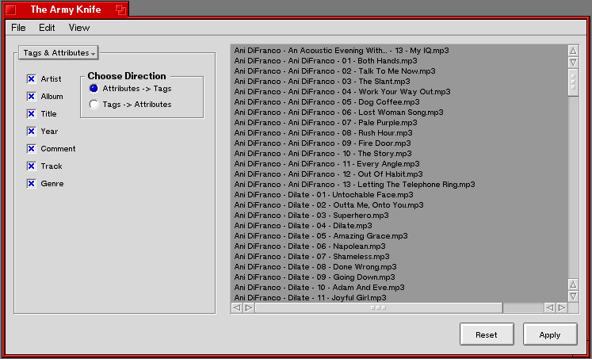

The Army Knife

The default tab for The Army Knife can be set using the preferences panel (Edit->Preferences)
The list contains all the files that The Army Knife knows about. You can add files by dragging them
onto The Army Knife, or empty the list using the Edit->Clear List command. The Edit->Save
Window Settings command allows users to save the current window location and size as the default.
You may select multiple files from that list with the following commands.
Select All Command-A(Alt-A)
Contigous Select Click first file, Option(Win) Click the last file
Noncontigous Select Shift Click all desired files.
The Editor

Allows the user (you) to edit the attributes and tags of one or more files at once. You tell The Editor to
work with attributes or tags by useing the radio buttons in the upper right. The check box "Also Apply To ...."
allows you to change the file's tags and attributes at the same time. If you have no files selected the
editor controls will be disabled by default. You may enable and disable any controls you like using the
check boxes. When you hit the apply button, The Army Knife will only change the selected attributes or tags
for the files selected in the list. Starting with Army Knife 3.10, there is a new feature that is sure to
be popular: User Defined Genres. A user can now make up their own genres and use them for the Genre Attribute.
This does not work for ID3 Tags because the genre is stored as number and not a string in tags. If a user tries
to save a User Defined Genre in a tag, the "Other" genre will be saved to the tag.
Tags & Attributes

If Attributes -> Tags is selected, then Tags & Attributes will copy the value of the attributes into
the corresponding ID3 tags for every selected file in the list. Otherwise, it will copy the ID3 Tag Values
into the attributes.
Names & Attributes

If Attributes -> Name is choosen, Names & Attributes will rename every file that is selected in the list
using the file's attributes and the supplied pattern. The default pattern can be changed in the preference panel.
(Edit->Preferences) Otherwise, it will parse each file name according to the supplied pattern, and sets the
attributes accordingly. The wildcard (/*) can be used for parts of the name that are variable, but you do not want
to assign to an attribute. The default pattern can be changed in the preference panel. (Edit->Preferences)
Bugs? Feature Requests?
Check out the Army Knife project page at OSDrawer.net first, and if it
hasn't already been submitted, submit it!
Thanks:
Brian Tietz for Santa's Gift Bag
YNOP for the excellent YTabView.
Technix for the UI suggestions.
ToBeOrNotToBe for his time and Ogg expertise.
The BeShare community for all of their help.
Be for THE Operating System.
The Haiku devs for making Haiku a reality.
And everyone else in the BeOS/Haiku community for making it what it is.